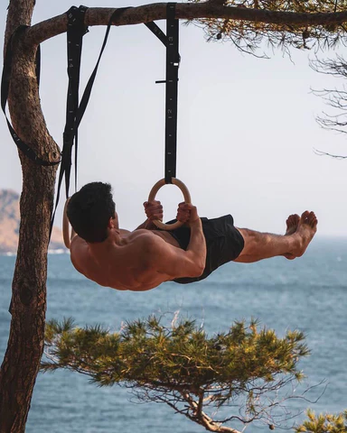

|
Il calisthenics puo' essere visto come un grande albero: alla base, il tronco rappresenta la disciplina madre,
basata sull'allenamento a corpo libero, sul controllo del proprio corpo e sulla forza funzionale.
Da questo tronco si diramano diversi rami, ognuno con caratteristiche uniche, ma tutti accomunati dalla stessa radice:
la padronanza del proprio corpo.
Uno dei rami principali e' lo Street Lifting, che unisce la forza del calisthenics all'intensita' del sovraccarico
progressivo. Qui, esercizi fondamentali come trazioni e dips vengono eseguiti con zavorre, con l'obiettivo di aumentare la forza massima.
A fianco troviamo lo Street Workout Freestyle, una disciplina piu'spettacolare, fatta di acrobazie, rotazioni, slanci
e dinamiche sulla sbarra. In questo ramo, il corpo diventa un'estensione dell'arte del movimento, unendo forza esplosiva e creativita'.
Il ramo delle Static Skills si concentra invece sul controllo assoluto. Posizioni come la planche, il front lever o la human flag
richiedono una tensione isometrica totale e anni di lavoro tecnico. E' qui che l'equilibrio e la precisione diventano protagonisti.
Il ramo della Ginnastica artistica, che si ispira agli esercizi classici di anelli, parallele e verticali.
Eleganza e perfezione del gesto si fondono con la potenza del corpo libero.Un ramo piu' accessibile,
ma non per questo meno importante, e' il Bodyweight Strength Training, dedicato a chi vuole migliorare
forza e composizione corporea senza attrezzature complesse, attraverso progressioni graduali e funzionali.
|

|